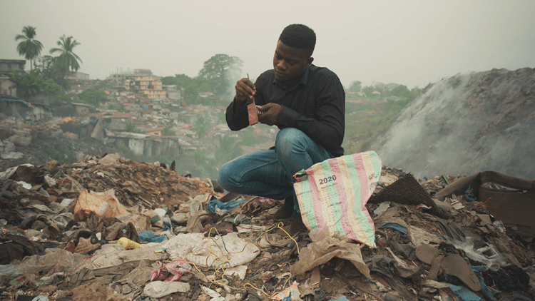
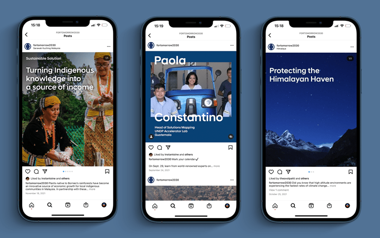

As Hyundai Motor Company evolved its brand vision toward "Progress for Humanity," the challenge was bigger than marketing: how do you make a global automotive brand credibly relevant to the world's most urgent sustainability conversation? Institutional sustainability efforts too often centre around top-down systems and distant experts, leaving out the grassroots innovators closest to the problems.
Hyundai needed more than a campaign. They needed a framework that could bridge corporate ambition with credibility, and a communications strategy that could carry that story to the world with integrity and scale.

As the global integrated communications lead, I guided Hyundai and the UNDP through the strategic and creative alignment that made this partnership possible. The work spanned brand strategy, partnership positioning, content direction, and the production of a documentary.
The central idea: shift the sustainability conversation from distant systems to present solutions, by putting grassroots innovators at the centre. This led to the creation of the for Tomorrow platform: a project to expand the sustainability conversation by spotlighting changemakers from all over the world and a feature-length documentary to bring those stories to life.
The documentary premiered in New York, on the sidelines of the 77th Session of the United Nations General Assembly United Nations Development Programme, with attendance from senior UN ambassadors and UNDP leadership. Narrated by actor Daisy Ridley, the film was shot by local crews across Vietnam, Sierra Leone, Azerbaijan, Peru, India, and Guinea during the pandemic. The film premiered simultaneously on Amazon Prime and YouTube, extending its reach far beyond the Lincoln Center audience.

The project landed with far-reaching cultural, institutional, and commercial impact. for Tomorrow has presented 84 solutions by innovators from 52 countries, establishing itself as a living platform for grassroots sustainability rather than a one-time campaign.
The documentary and its promotional videos received millions of views on YouTube and won 20+ awards across major festivals, and the SXSW Innovation Awards in the Media category (one of the most competitive recognition programmes in global innovation) amplifying the stories of local innovators to a global audience.
The initiative cemented Hyundai's repositioning as a purpose-driven brand, described by Hyundai's President and CEO as "the first-ever partnership between a United Nations agency and a corporation" of its kind.